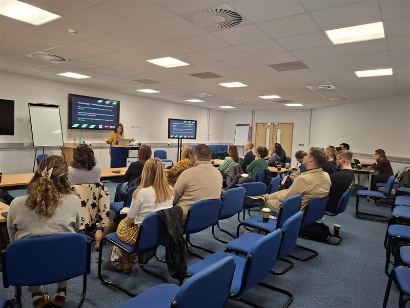
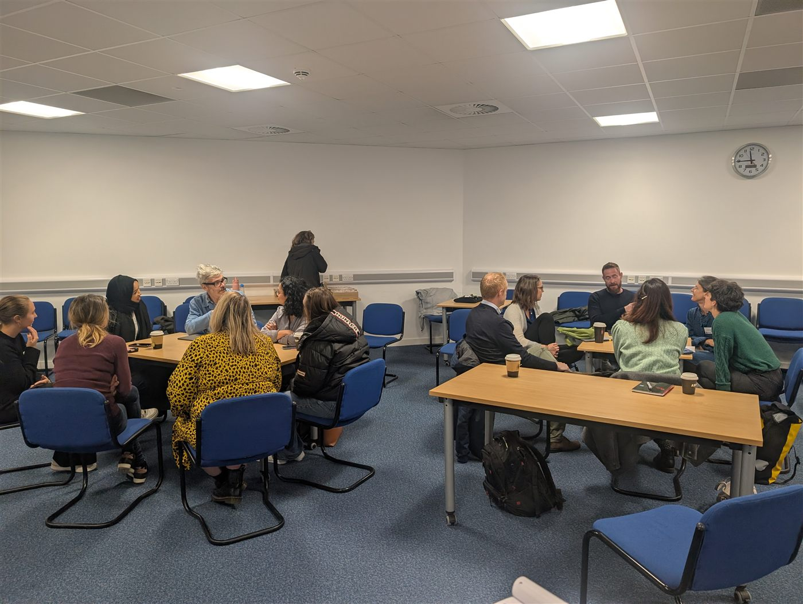

Business & executive coaching
The business grows when its people do
For founders, leaders and teams — from ambitious start-ups to large organisations and non-profits. Strategy for the business; transformation for the people running it. Because the ceiling on most businesses isn't the market. It's the thinking at the top.
The leadership block
Imposter Syndrome doesn't stop at the door of the boardroom
Some of the most capable leaders carry the heaviest doubt — second-guessing decisions, softening their voice in the rooms that matter, over-working to outrun the feeling of not being enough. It costs businesses momentum, and it costs leaders their conviction.
This is where my work goes deepest: freeing leaders and their teams from Imposter Syndrome and the self-limiting patterns that hold decisions, growth and people back. I coach employees one-to-one, and run group sessions that raise awareness and share practical strategies — creating a space where vulnerability and authenticity come to the fore, deepening peer-to-peer bonds and bringing teams together.
Savvy businesses understand the impact Imposter Syndrome has on their people — on mental health and wellbeing, and on productivity and growth. They want employees in a mindset where they can go all in and be the best versions of themselves — and addressing the root causes of Imposter Syndrome is proven to significantly help.
Book a free discovery callThe impact
The cost of caged thinking
In most workplaces, Imposter Syndrome is suffered in silence — and the people carrying it are often your most capable. From the outside they look fine: diligent, reliable, always prepared. Underneath, they're playing small — and playing small is exhausting.
For the individual, the cost is heavy and personal. Confidence quietly drains away. Evenings disappear into over-preparing. Ideas go unshared and new opportunities are turned down — not for lack of ability, but for fear of being found out. The stress builds unseen, into unhappiness at work, and too often into going off sick with it. People don't leave Imposter Syndrome at the office door; they carry it home.
For the business, the bill lands everywhere at once. Growth slows, because your best people won't reach for what they're truly capable of. Blue-sky thinking dries up, because nobody will risk a "silly" idea out loud. Meetings go quiet, opportunities go unclaimed — and unhappy staff go off sick with stress, or go somewhere else entirely.
And if you're a sole trader or entrepreneur, Imposter Syndrome hits harder still. There's no team to share the load and nowhere to pass a decision — you wear every hat, and the business is built on you. So when the doubt is about you, the doubt is about the business.
Left unaddressed, caged thinking shows up on every line of the business:
Quieter people
Thoughts unshared, questions unasked, talent playing small — unhappiness and stress building underneath.
Safer decisions
New opportunities declined, blue-sky thinking dried up — innovation stalled at "what if I'm wrong?"
Slower work
Perfectionism, over-preparing and procrastination taxing every task — and burning people out.
Smaller results
Growth held back, sickness absence rising, promotions unclaimed — and your best people quietly leaving.
It doesn't have to stay this way. Free the thinking and the pattern reverses — that's the Swallow Effect: happier people, braver decisions, better work, stronger results.
Book a free discovery callWhat we build
Four outcomes of the work
Through practical tools and clear strategy, coaching engagements are designed around measurable change — for the business and everyone in it.
Direction
Clarity & strategy
A vision that reflects your mission and your ambition — with growth priorities separated from the noise, and a focused, results-driven strategy to match.
Conviction
Leadership & decisions
Confident, decisive leadership — and teams empowered to make strong, independent decisions without everything routing through you.
Creativity
Innovation & perspective
Fresh eyes on internal challenges and external opportunity. Unlock the creative thinking that gets buried under operational pressure.
Culture
Resilient, purpose-driven teams
People who feel seen, valued and aligned with the bigger picture — a happier, more resilient culture where performance follows purpose.
I also work with the charity and voluntary sector, with engagements tailored to your mission and means.
Talks, training & workshops
Invited in — and invited back
Alongside coaching, I'm regularly invited into organisations to deliver business wellbeing talks, training sessions, team-building workshops and online lunchtime talks — and invited back to provide specialist training on Leadership Fundamentals programmes.
One online lunchtime session — helping leaders communicate with impact and overcome Imposter Syndrome in the workplace — drew over 400 people, who stayed for the whole session.



The result is what I call the Swallow Effect: free the thinking, and people soar — and when people soar, so does the business. Happier people, braver decisions, better work, stronger results.
For individuals
Career & professional growth
Not leading a business, but ready for your next professional level? Career coaching applies the same depth of work to your own trajectory.
Map the ambition
Define what success actually looks like for you — then reverse-engineer it into deliberate, practical moves.
Free the thinking
Using NLP, we surface how your thinking shapes your performance — and shift the patterns that have kept you playing below your level.
Show up differently
Resilience, adaptability, visibility and voice — the way of being that gets you seen, heard and trusted at the next level.
I recommend Marie to help your business grow. Her objective coaching style helped me see clearly what I needed to do to grow my client base at the right pace and increase my profit margins — and build confidence to take measured risks that moved my company forward. Daniel — Business Owner
Begin
Let's talk about your next level
Engagements are designed around your business — explore the packages, or start with a free, confidential discovery call.
Book a free discovery call View investment